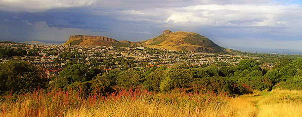

DAY 1: May 24, 2012
Workshop
Venue: Informatics Forum 4.31 (directions)
09:15-09:35 |
Tea and Coffee with Danish Selection |
|
09:35-09:45 |
Welcome |
|
| 09:45-10:25 | Yurii Nesterov (CORE, UCL, headline speaker) | |
| Subgradient methods for huge-scale optimization problems (paper) | ||
10:25-11:00 |
Break |
|
| 11:00-11:40 | Mark Schmidt (INRIA) | |
| Inexact proximal-gradient methods and linearly-convergent stochastic gradient methods | ||
| 11:45-12:25 | Peter Richtarik (Edinburgh) | |
| Parallel block coordinate descent methods for huge-scale partially separable problems (paper) | ||
12:25-14:00 |
Lunch (Informatics Forum, 4th level, room: Mini Forum 2) |
|
| 14:00-14:40 | Alexandre D'Aspremont (École Polytechnique) | |
| A stochastic smoothing algorithm for semidefinite programming | ||
| 14:45-15:25 | Jacek Gondzio (Edinburgh) | |
| Matrix-free interior point method for large-scale optimization | ||
15:25-16:00 |
Coffee Break |
|
| 16:00-16:40 | Michal Kocvara (Birmingham) | |
| Domain decomposition techniques in topology optimization | ||
| 16:45-17:25 | Coralia Cartis (Edinburgh) | |
| A new and improved recovery analysis for iterative hard thresholding algorithms in compressed sensing | ||
| 17:30-18:10 | Nathan Srebro* (Toyota Technological Institute at Chicago) | |
| Stochastic approximation with mini-batches: smoothness, optimistic rates and acceleration |
UPDATE: Booklet (pdf).
* Nati Srebro will also give a seminar talk on 'Matrix Learning: A Tale of Two Norms', on May 23rd, at 15:30, in 6206 James Clerk Maxwell Building, King's Buildings campus of U of Edinburgh (ERGO seminar series)
DAY 2: May 25, 2012
Morning: Light trek to Arthur's Seat
On Friday morning there is an optional walk / light trek to the top of Arthur's Seat—a 350 millions years old volcano in the city centre rising 251 meters above the sea level—offering magnificient views of Edinburgh and the Firth of Forth. We are departing at 9:30 sharp from the entrance of Informatics Forum, please plan to arrive 10 minutes earlier.

"The views from the summit [of Arthur's seat] are awesome. The city itself is a real gem, Edinburgh is in my own opinion the most beautiful and fascinating city in Britain by a mile. [www.TrekkingBritain.com]
While the walk is reasonably light, good footwear is recommended as there will be some ascending to do. It is recommended that you bring along a light weather-proof jacket; it can get windy up on the hill. Also, please bring enough water and light refreshments with you.
09:20-09:30 |
Meeting in front of the Informatics Forum |
|
| 09:30-12:30 | Light trek to the top of Arthur's Seat |
download photos |
12:30-14:00 |
Lunch (individual) |
We are not going to walk straight to the Arthur's Seat. Instead, we will take a detour and first walk through the George Square campus towards the National Museum of Scotland (entrance free, great exhibits) and the Elephant house, the birthplace caffe of Harry Potter. Continuing along the 300m long George IV Bridge built in 1832, we enter the Royal Mile (a 1 mile long backbone of Edinburgh's historic centre joining the Edinburgh Castle and the Holyrood Abbey) near the High Court of Justiciary, Scotland's supreme criminal court. From that point we will walk along the Royal Mile, away from the Castle and towards the Holyrood Abbey, i.e., down the hill, passing many points of interest which you might want to visit if your are staying in Edinburgh a bit longer: St. Gile's Cathedral (Mother Church of Presbyterianism), Mary King's Close, North Bridge, Canongate Kirk, Scottish Parliament Building, Dynamic Earth Science Centre, Palace of Holyroodhouse and Queen's Gallery. Once at the end of the Royal Mile we enter the Holyrood Park, walking along a foot path (called Radical Road) below Salisbury Crags—a stretch of over 46 meters high cliffs of dolerite and columnal basalt offering spectacular views of the city centre. At the end of the path is the foot of Arthur's Seat; from there it is just a 20 min walk up to the summit point. We will return to the Royal Mile via a different route through the Holyrood Park, passing by the St. Margaret's Loch and the ruins of St Anthony's Chapel.
Afternoon: Colloquium
Venue: Lecture Theatre C, 3rd floor of James Clerk Maxwell Building (JCMB) (directions)
15:30-16:00 |
Coffee & Tea (JCMB 5th floor; room 5212, Common Area) |
|
| 16:00-17:00 | Yurii Nesterov | |
| Optimization in relative scale | ||
17:00-19:00 |
Wine & Cheese reception (JCMB 3rd floor; Costa Coffee Area) |

{kind=link}
{kind=link}